Одноточечная навигация и избегание препятствий Navigation2
1. Содержание урока
- Изучение функции одноточечной навигации и избегания препятствий Navigation2 на роботе.
- Запустите программу. В rviz загрузится карта. В интерфейсе rviz с помощью инструмента [2D Pose Estimate] задайте начальное положение робота, затем с помощью инструмента [2D Goal Pose] задайте целевую точку для робота. Робот построит путь с учётом окружающего пространства и переместится к цели. При встрече с препятствиями он автоматически их объедет и остановится по достижении цели.
- Изучите понятия глобальной и локальной карты стоимости (costmap), настройку параметров навигации и принципы алгоритма локализации AMCL.
2. Введение в Navigation2
2.1 Введение
Общая архитектурная схема Navigation2
Navigation2 предоставляет следующие инструменты:
- инструменты загрузки, обслуживания и хранения карт (Map Server);
- инструменты локализации робота на карте (AMCL);
- инструменты планирования пути из точки A в точку B с объездом препятствий (Nav2 Planner);
- инструменты управления роботом при следовании по пути (Nav2 Controller);
- инструменты преобразования данных датчиков в представление карты стоимости окружающего пространства робота (Nav2 Costmap 2D);
- инструменты построения сложного поведения робота с помощью деревьев поведения (Nav2 Behavior Trees и BT Navigator);
- инструменты вычисления восстанавливающего поведения (recovery behaviors) в случае сбоя (Nav2 Recoveries);
- инструмент следования по последовательности путевых точек (Nav2 Waypoint Follower);
- инструмент и "сторожевой таймер" для управления жизненным циклом серверов (Nav2 Lifecycle Manager);
- плагин для подключения пользовательских алгоритмов и поведений (Nav2 Core).
Navigation2 (Nav2) — это встроенный фреймворк навигации в ROS 2. Его назначение — безопасно перемещать мобильных роботов из точки A в точку B. Nav2 реализует такие функции, как динамическое планирование пути, расчёт скорости приводов, избегание препятствий и восстановление после сбоев.
Nav2 использует деревья поведения (Behavior Trees, BT) для вызова модульных серверов при выполнении действия. Действия могут включать расчёт пути, управляющие воздействия, восстановление после сбоя или другие связанные с навигацией действия. Эти действия представляют собой независимые узлы, которые взаимодействуют с деревом поведения через сервер действий (action server).

2.2 Дополнительные материалы
- Документация Navigation2: https://navigation.ros.org/index.html
- Navigation2 на GitHub: https://github.com/ros-planning/navigation2
- Статья по Navigation2: https://arxiv.org/pdf/2003.00368.pdf
3. Подготовка
3.1 Описание содержания
В этом уроке в качестве примера используется Jetson Orin NX. Для плат Raspberry Pi и Jetson Nano необходимо открыть терминал и ввести команду для входа в Docker-контейнер. После входа в контейнер вводите команды этого урока уже внутри него. Инструкции по входу в Docker-контейнер см. в руководстве к изделию [Configuration and Operation Guide] — [Entering the Docker] (для пользователей Jetson Nano и Raspberry Pi 5, см. соответствующий раздел). Для плат Orin и NX достаточно просто открыть терминал и ввести команды этого урока.
3.2 Запуск агента
Примечание: перед тестированием всех примеров необходимо сначала запустить агента в Docker. Если он уже запущен, повторно запускать его не нужно.
Введите следующую команду в терминале робота:
sh start_agent.sh
Терминал выведет следующее сообщение, означающее успешное подключение.
4. Запуск примера
4.1 Навигация одним щелчком
Обратите внимание:
- Для контроллеров серии Jetson Nano и Raspberry Pi необходимо сначала войти в Docker-контейнер (порядок действий см. в разделе [Docker Course Section — Entering the Robot's Docker Container]).
- Для этого раздела требуется как минимум одна готовая карта. Обратитесь к любому из уроков SLAM-картографирования, например Gmapping-SLAM Mapping, Cartographer Mapping или Slam-Toolbox Mapping.
Чтобы запустить нижнеуровневые датчики в терминале робота:
ros2 launch M3Pro_navigation base_bringup.launch.py
Чтобы снова запустить навигацию:
ros2 launch M3Pro_navigation navigation2.launch.py
Функцию визуализации rviz можно запустить как в терминале робота, так и на виртуальной машине. Выберите один из способов. Не запускайте её одновременно на виртуальной машине и в терминале робота:
Например, на виртуальной машине откройте терминал и запустите интерфейс визуализации rviz:
ros2 launch slam_view nav_rviz.launch.py
Команда запуска интерфейса визуализации Rviz на роботе:
ros2 launch M3Pro_navigation nav_rviz.launch.py

Теперь вы увидите загрузку карты. Нажмите [2D Pose Estimate], чтобы задать начальное положение робота. Исходя из фактического положения робота в пространстве, щёлкните и перетащите мышью в Rviz, чтобы переместить модель робота в заданное положение. Как показано на рисунке ниже, если область сканирования лидара примерно совпадает с реальным препятствием, положение задано верно.
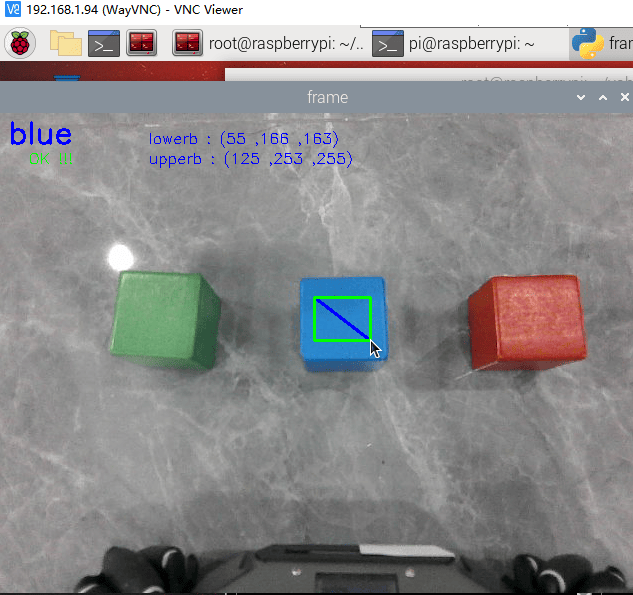
После завершения инициализации положения в интерфейсе rviz появятся модель робота и красное 2D-облако точек лидара.

Для одноточечной навигации нажмите инструмент [2D Goal Pose], затем с помощью мыши выберите в rviz целевую точку и ориентацию, после чего отпустите кнопку мыши.
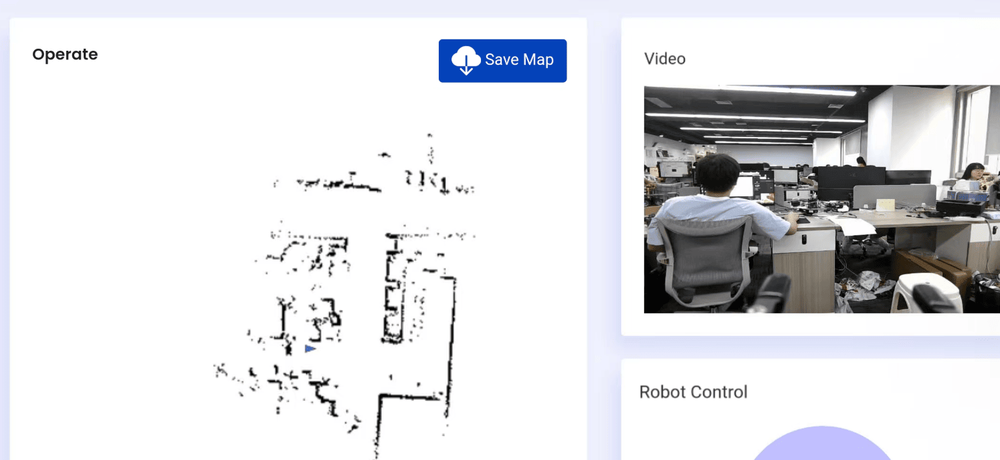
Робот строит путь с учётом окружающего пространства и движется по нему к целевой точке.
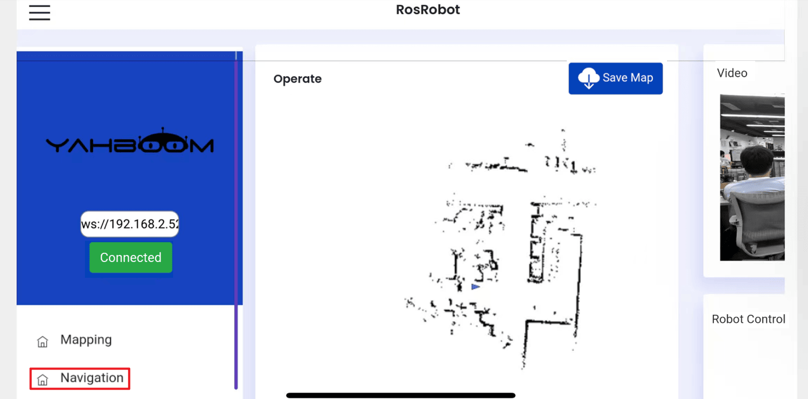
После того как робот успешно достигнет целевой точки, в терминале робота появится сообщение «Goal succeeded», означающее успешное завершение навигации.
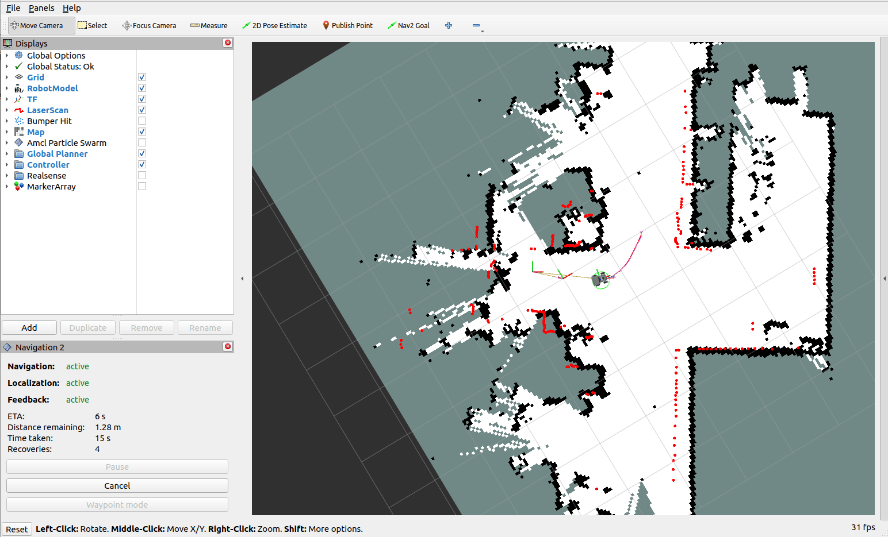
4.2 Просмотр карты стоимости (costmap)
Чтобы посмотреть глобальную и локальную карты стоимости, найдите пункт Global Costmap в группе Global Planner в левой панели настроек и включите его отображение — так отобразится глобальная карта стоимости. Аналогично найдите пункт Local Costmap в группе Controller и включите его. Нажмите опцию Costmap, чтобы отобразить карту стоимости (понятие карты стоимости будет объяснено в теоретическом разделе ниже).
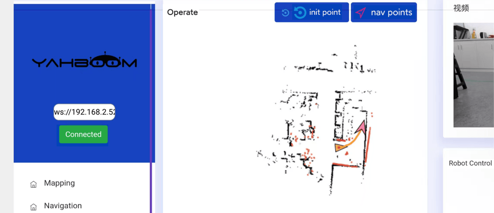
4.3 Просмотр графа взаимодействия узлов
В терминале виртуальной машины введите:
ros2 run rqt_graph rqt_graph
Если граф не отображается сразу, выберите [Nodes/Topics (all)] и нажмите кнопку обновления в левом верхнем углу. Оригинальный граф слишком велик; его можно посмотреть в папке этого урока.
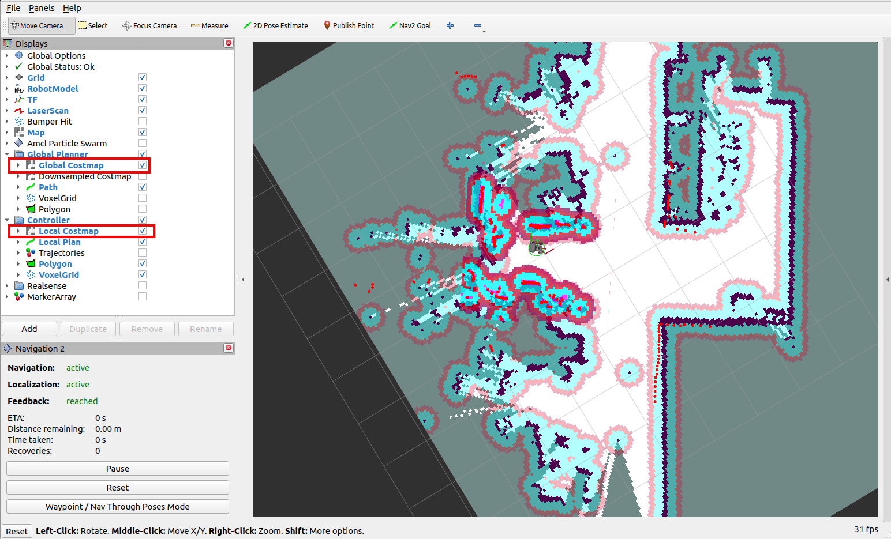
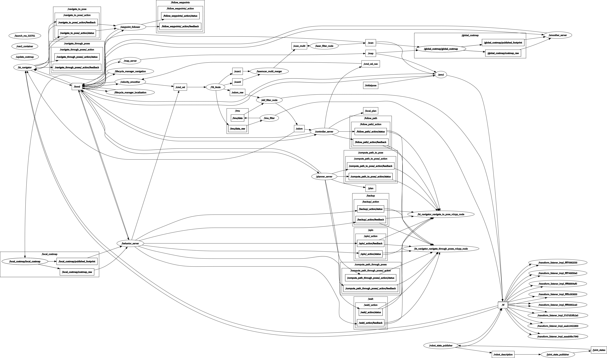
4.4 Просмотр дерева TF
В терминале виртуальной машины введите:
ros2 run rqt_tf_tree rqt_tf_tree
Если страница не отображается сразу, нажмите значок обновления в левом верхнем углу, чтобы обновить её. Оригинальное изображение слишком велико; его можно посмотреть в папке урока.
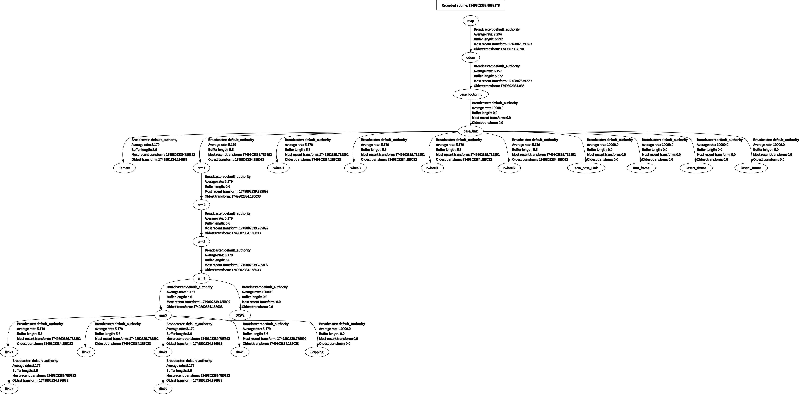
5. Разбор навигации
5.1 Основные этапы процесса навигации
5.1.1 Этап 1: инициализация системы и загрузка карты
Получение карты
- Загрузка заранее построенной растровой карты из
map_server. - Карта содержит информацию о статических препятствиях и служит базовой моделью окружения для навигации.
Инициализация карты стоимости
- Global Costmap (глобальная карта стоимости): строится на основе статической карты, используется для глобального планирования пути.
- Local Costmap (локальная карта стоимости): объединяет данные топика реального времени лидара для динамического избегания препятствий.
5.1.2 Этап 2: обработка данных датчиков и восприятие окружения
Доступ к данным датчиков
- Данные лидара (
/scan), IMU (/imu/data) и одометрии (/odom) поступают через топики ROS.
Обновление карты стоимости
- Локальная карта стоимости обновляет информацию о динамических препятствиях в реальном времени. Для каждой ячейки сетки рассчитывается вероятность занятости и стоимость на основе данных датчиков (например, чем ближе к препятствию, тем выше стоимость).
- Расширение (Inflation): расширяет границы препятствий, чтобы не дать роботу подойти к ним слишком близко.
5.1.3 Этап 3: планирование пути (глобальное и локальное)
Глобальное планирование пути
- Вход: начальная точка (текущее положение робота), конечная точка (целевое положение) и глобальная карта стоимости.
- Алгоритм планировщика Dijkstra строит оптимальный путь (последовательность дискретных координатных точек) от начальной до конечной точки.
Локальное планирование пути и его отслеживание
Локальный планировщик DWBLocalPlanner формирует краткосрочные управляющие команды, которые робот может выполнить, основываясь на глобальном пути и локальной карте стоимости.
5.1.4 Этап 4: выполнение управления и принятие решений о поведении
Вывод контроллера
- Контроллер преобразует локальный путь в линейную скорость робота (
linear.x) и угловую скорость (angular.z), которые публикуются через топик/cmd_vel. - Сглаживание скорости: предотвращает резкие изменения движения робота и повышает устойчивость.
Процесс принятия решений деревом поведения
Дерево поведения определяет приоритеты и логику переходов между состояниями задач навигации. Типичный процесс выглядит так:
- Проверка достижимости цели: если глобальное планирование не удалось, запускается «восстанавливающее поведение» (recovery behavior) (например, повторное планирование).
- Выполнение локального избегания препятствий: при обнаружении препятствия на локальной карте стоимости робот временно отклоняется от глобального пути.
- Достижение цели: когда ошибка между положением робота и целевым положением становится меньше порогового значения, задача считается выполненной.
Механизм восстанавливающего поведения
Когда во время навигации возникает аномалия (например, путь полностью заблокирован), запускается заранее заданная стратегия восстановления (например, поворот для поиска нового пути или отход назад с последующим повторным планированием).
5.2 Ключевые технические принципы
5.2.1 Карта стоимости (Costmap)
- Вероятностное представление сетки: каждая ячейка сетки хранит вероятность занятости (0–1) и обновляется на основе данных датчиков (например, трассировки луча лидаром — raycast).
- Многослойное объединение стоимости: статическая стоимость (для препятствий на карте) + динамическая стоимость (для препятствий, обнаруженных датчиками в реальном времени) + стоимость расширения (для безопасной дистанции).
Карта стоимости — это 2D- или 3D-карта, создаваемая и обновляемая роботом на основе данных датчиков. Ниже приведён краткий обзор.
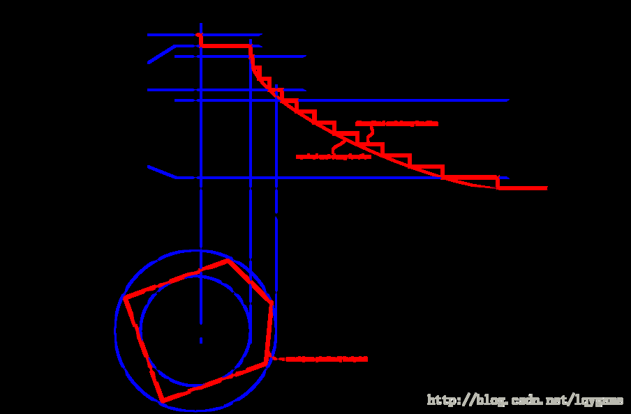
На рисунке выше красная область представляет препятствия на карте стоимости, синяя область — препятствия, расширенные на радиус вписанной окружности робота, а красный многоугольник — контур робота (footprint, вертикальная проекция контура робота). Чтобы избежать столкновений, контур робота не должен пересекать красную область, а центр робота не должен пересекать синюю область. Карта стоимости ROS использует формат сетки, где значение каждой ячейки (cell cost) находится в диапазоне от 0 до 255. Оно делится на три состояния: занято (есть препятствие), свободная область (нет препятствий) и неизвестная область.
Конкретные состояния и значения показаны на следующем рисунке:
Рисунок выше можно разделить на пять частей, где красный многоугольник представляет контур робота:
- Lethal: центр робота совпадает с центром ячейки сетки; в этом случае робот определённо столкнётся с препятствием.
- Inscribed: описанная окружность ячейки вписана в контур робота; в этом случае робот определённо столкнётся с препятствием.
- Possibly circumscribed: описанная окружность ячейки вписана в контур робота лишь частично; в этом случае робот находится в непосредственной близости от препятствия, но столкновение не гарантировано.
- Freespace: пространство без препятствий.
- Unknown: пространство с неизвестным состоянием.
Глобальная карта стоимости (Global Costmap):
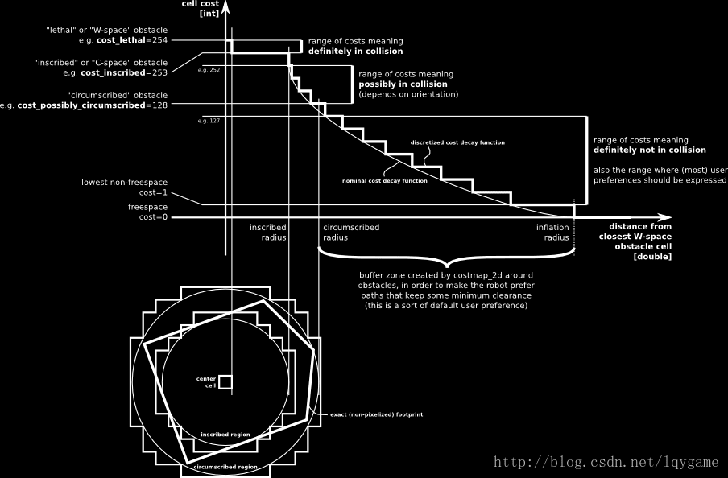
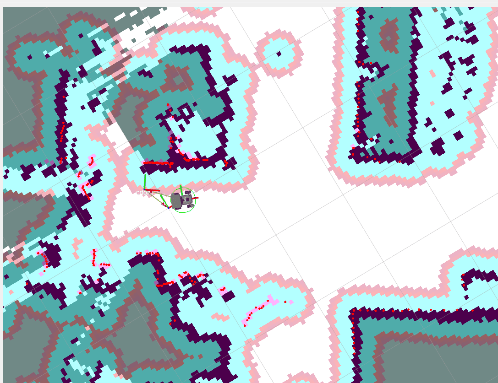
Локальная карта стоимости (Local Costmap):
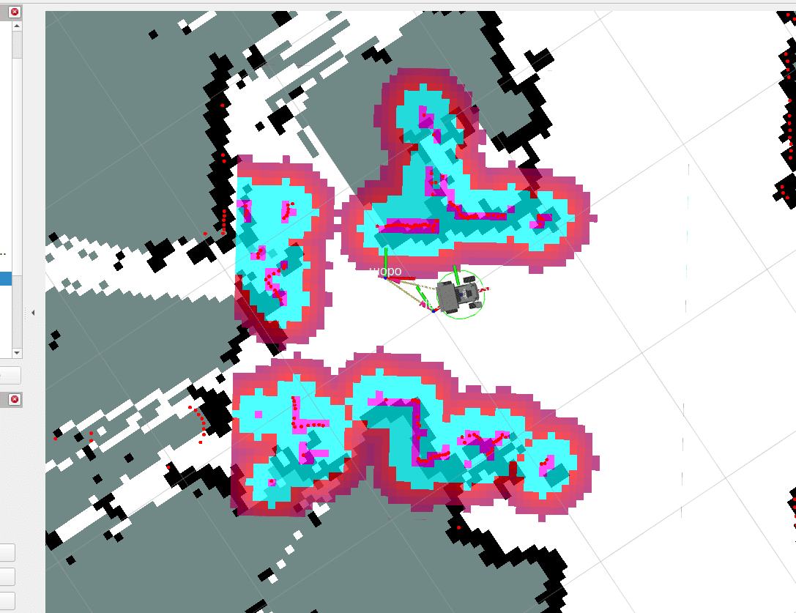
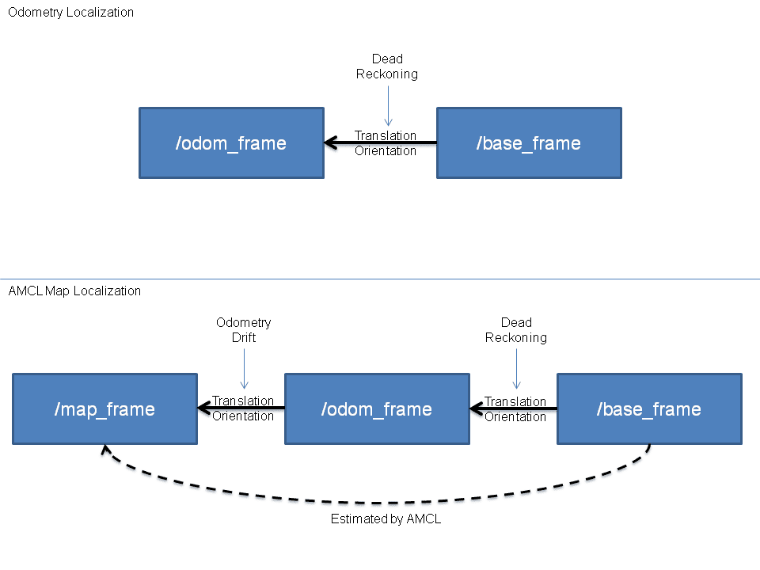
5.2.2 Алгоритм локализации AMCL
AMCL (Adaptive Monte Carlo Localization) — это вероятностная система локализации для 2D мобильных роботов. Она реализует адаптивный метод (или метод с KLD-выборкой) Монте-Карло локализации, использующий фильтр частиц для оценки положения робота на основе заданной карты.
Как показано на рисунке ниже, если одометрия безошибочна, в идеальном мире можно напрямую использовать данные одометрии (верхняя часть) для вывода положения робота (base_frame) относительно системы координат одометрии. Однако на практике существуют дрейф одометрии и заметная накопленная ошибка. Поэтому AMCL использует метод, показанный в нижней части. Этот метод сначала использует данные одометрии для предварительной локализации base_frame. Затем, с помощью модели измерений, определяется положение base_frame относительно map_frame (системы координат глобальной карты), и тем самым определяется положение робота на карте. (Обратите внимание: хотя здесь оценивается преобразование от base к map, в итоге публикуется преобразование от map к odom, что можно понимать как дрейф одометрии.)
В дереве TF во время навигации робота преобразование координат между map (система координат карты) и odom (система координат одометрии) публикуется алгоритмом локализации AMCL, а преобразование координат между odom (система координат одометрии) и base_footprint (система координат проекции центра шасси робота) публикуется узлом ekf_filter_node из пакета robot_localization. Его функция — публиковать данные одометрии после объединения данных IMU-датчика и «сырой» одометрии от энкодеров.
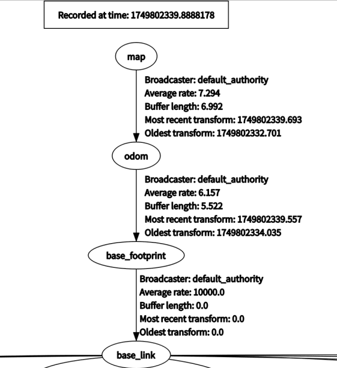
На приведённой выше схеме взаимодействия узлов видно поток данных для ekf_filter_node.
Узел /YB_Node — это узел шасси робота, публикующий /imu/data_raw («сырые» данные IMU-датчика) и /odom_raw («сырые» данные одометрии от энкодеров).
Узел imu_filter подписывается на /imu/data_raw, публикуемый узлом шасси робота («сырые» данные IMU-датчика). Узел imu_filter фильтрует «сырые» данные IMU-датчика и публикует их в топик /imu/data.
Узел ekf_filter_node подписывается на топики /odom и /imu/data, объединяет данные нескольких датчиков и публикует результат в топик /odom.
5.3 Планирование пути
5.3.1 Глобальное планирование пути
Глобальное планирование пути вычисляет оптимальный или допустимый глобальный путь от начальной точки до цели в пределах известной карты окружения, без учёта препятствий в реальном времени. Путь от начальной точки до цели рассчитывается с целью достижения глобального оптимума. Как показано на рисунке ниже, путь, соединённый стрелками, — это глобальный путь.
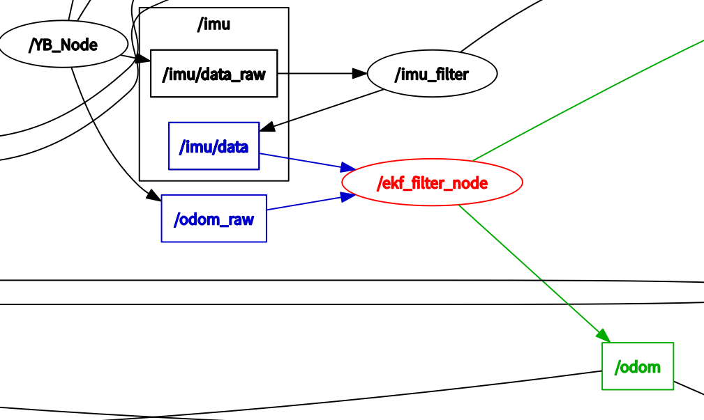
5.3.2 Локальное планирование пути
Локальное планирование пути динамически подстраивает путь робота на основе данных лидара в реальном времени во время движения, чтобы объезжать препятствия (препятствия отображаются на карте стоимости). Как показано на рисунке ниже, синий путь — это локальный путь.
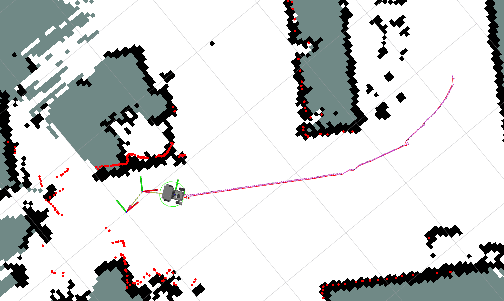
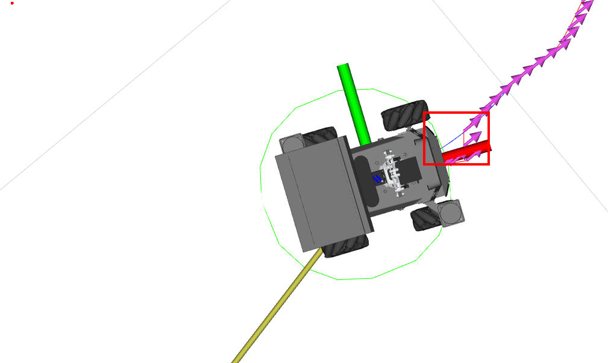
5.4 Настройка параметров навигации
Путь к файлу конфигурации:
Для Jetson Nano и Raspberry Pi сначала необходимо войти в Docker:
/root/M3Pro_ws/src/M3Pro_navigation/param/yahboom_M3Pro.yaml
Для Jetson Orin Nano и NX:
/home/jetson/M3Pro_ws/src/M3Pro_navigation/param/yahboom_M3Pro.yaml
Параметры конфигурации навигации по умолчанию:
# Настройка AMCL (Adaptive Monte Carlo Localization)
amcl :
ros__parameters :
# Использовать ли время симуляции; False — использовать реальное время
use_sim_time : False
# Параметр шума модели одометрии при повороте робота
alpha1 : 0.2
# Параметр шума модели одометрии при повороте и перемещении робота
alpha2 : 0.2
# Параметр шума модели одометрии при перемещении робота
alpha3 : 0.2
# Параметр шума модели одометрии при повороте, вызванном перемещением
alpha4 : 0.2
# Параметр шума модели одометрии при повороте (другой аспект)
alpha5 : 0.2
# Имя базовой системы координат робота
base_frame_id : "base_footprint"
# Порог расстояния для пропуска лучей, используется при обработке данных лазерного сканирования
beam_skip_distance : 0.5
# Порог ошибки для пропуска лучей, используется для решения о пропуске отдельных лучей
beam_skip_error_threshold : 0.9
# Порог пропуска лучей, используется для решения о пропуске отдельных лучей
beam_skip_threshold : 0.3
# Включена ли функция пропуска лучей
do_beamskip : false
# Имя глобальной системы координат
global_frame_id : "map"
# Коэффициент затухания для короткого лазерного отражения
lambda_short : 0.1
# Максимальная дистанция правдоподобия для лазерного сканирования
laser_likelihood_max_dist : 2.0
# Максимальная дальность лазерного сканирования
laser_max_range : 100.0
# Минимальная дальность лазерного сканирования
laser_min_range : -1.0
# Тип модели лазера
laser_model_type : "likelihood_field"
# Максимальное число лучей лазера, используемых при одном обновлении
max_beams : 60
# Максимально допустимое число частиц в фильтре частиц
max_particles : 2000
# Минимально допустимое число частиц в фильтре частиц
min_particles : 500
# Имя системы координат одометрии
odom_frame_id : "odom"
# Порог ошибки фильтра частиц
pf_err : 0.05
# Порог доверия фильтра частиц
pf_z : 0.99
# Коэффициент быстрого восстановления, используется механизмом восстановления фильтра частиц
recovery_alpha_fast : 0.0
# Коэффициент медленного восстановления, используется механизмом восстановления фильтра частиц
recovery_alpha_slow : 0.0
# Интервал повторной выборки
resample_interval : 1
# Тип модели движения робота
robot_model_type : "nav2_amcl::DifferentialMotionModel"
# Частота сохранения положения робота
save_pose_rate : 0.5
# Стандартное отклонение попаданий лазера
sigma_hit : 0.2
# Публиковать ли преобразование TF
tf_broadcast : true
# Частота публикации преобразования TF
tf_publish_rate : 10.0
# Допуск по времени преобразования
transform_tolerance : 0.2
# Минимальный порог обновления по углу
update_min_a : 0.2
# Минимальный порог обновления по расстоянию
update_min_d : 0.25
# Вес попадания лазера
z_hit : 0.5
# Вес максимальной дальности лазера
z_max : 0.05
# Вес случайных лазерных измерений
z_rand : 0.5
# Вес короткого отражения лазера
z_short : 0.05
# Имя топика данных лазерного сканирования
scan_topic : scan
# Настройка клиента карты AMCL
amcl_map_client :
ros__parameters :
# Использовать ли время симуляции; False — использовать реальное время
use_sim_time : False
# Настройка узла AMCL RCLCPP
amcl_rclcpp_node :
ros__parameters :
# Использовать ли время симуляции; False — использовать реальное время
use_sim_time : False
# Настройка BT Navigator
bt_navigator :
ros__parameters :
# Использовать ли время симуляции; False — использовать реальное время
use_sim_time : False
# Имя глобальной системы координат
global_frame : map
# Имя базовой системы координат робота
robot_base_frame : base_link
# Имя топика данных одометрии
odom_topic : /odom
# Имя файла XML дерева поведения по умолчанию
default_bt_xml_filename : "navigate_w_replanning_and_recovery.xml"
# Период цикла дерева поведения
bt_loop_duration : 10
# Таймаут сервера по умолчанию
default_server_timeout : 20
# Включён ли мониторинг Groot
enable_groot_monitoring : True
# Порт ZMQ-публикатора Groot
groot_zmq_publisher_port : 1666
# Порт ZMQ-сервера Groot
groot_zmq_server_port : 1667
# Список имён плагинов-библиотек дерева поведения
plugin_lib_names :
- nav2_compute_path_to_pose_action_bt_node
- nav2_compute_path_through_poses_action_bt_node
- nav2_follow_path_action_bt_node
- nav2_back_up_action_bt_node
- nav2_spin_action_bt_node
- nav2_wait_action_bt_node
- nav2_clear_costmap_service_bt_node
- nav2_is_stuck_condition_bt_node
- nav2_goal_reached_condition_bt_node
- nav2_goal_updated_condition_bt_node
- nav2_initial_pose_received_condition_bt_node
- nav2_reinitialize_global_localization_service_bt_node
- nav2_rate_controller_bt_node
- nav2_distance_controller_bt_node
- nav2_speed_controller_bt_node
- nav2_truncate_path_action_bt_node
- nav2_goal_updater_node_bt_node
- nav2_recovery_node_bt_node
- nav2_pipeline_sequence_bt_node
- nav2_round_robin_node_bt_node
- nav2_transform_available_condition_bt_node
- nav2_time_expired_condition_bt_node
- nav2_distance_traveled_condition_bt_node
- nav2_single_trigger_bt_node
- nav2_is_battery_low_condition_bt_node
- nav2_navigate_through_poses_action_bt_node
- nav2_navigate_to_pose_action_bt_node
- nav2_remove_passed_goals_action_bt_node
- nav2_planner_selector_bt_node
- nav2_controller_selector_bt_node
- nav2_goal_checker_selector_bt_node
# Настройка узла BT Navigator RCLCPP
bt_navigator_rclcpp_node :
ros__parameters :
# Использовать ли время симуляции; False — использовать реальное время
use_sim_time : False
# Настройка Controller Server
controller_server :
ros__parameters :
# Использовать ли время симуляции; False — использовать реальное время
use_sim_time : False
# Частота работы контроллера
controller_frequency : 5.0
# Минимальный порог скорости по X
min_x_velocity_threshold : 0.001
# Минимальный порог скорости по Y
min_y_velocity_threshold : 0.5
# Минимальный порог скорости поворота
min_theta_velocity_threshold : 0.001
# Максимально допустимая толерантность к сбоям
failure_tolerance : 0.3
# Имя плагина проверки прогресса
progress_checker_plugin : "progress_checker"
# Список имён плагинов проверки цели
goal_checker_plugins : [ "general_goal_checker" ]
# Список имён плагинов контроллера
controller_plugins : [ "FollowPath" ]
# Параметры проверки прогресса
progress_checker :
# Тип плагина проверки прогресса
plugin : "nav2_controller::SimpleProgressChecker"
# Минимальный радиус, на который должен сдвинуться робот
required_movement_radius : 0.5
# Максимально допустимое время движения
movement_time_allowance : 10.0
general_goal_checker :
# Является ли это проверкой цели с сохранением состояния
stateful : True
# Тип плагина проверки цели
plugin : "nav2_controller::SimpleGoalChecker"
# Допуск по цели в направлениях X и Y
xy_goal_tolerance : 0.15
# Допуск по цели для направления поворота
yaw_goal_tolerance : 0.15
# Параметры локального планировщика DWB
FollowPath :
# Тип плагина локального планировщика
plugin : "dwb_core::DWBLocalPlanner"
# Отображать ли подробности траектории для отладки
debug_trajectory_details : True
# Минимальная скорость по X
min_vel_x : 0.0
# Минимальная скорость по Y
min_vel_y : 0.0
# Максимальная скорость по X
max_vel_x : 0.35
# Максимальная скорость по Y
max_vel_y : 0.0
# Максимальная скорость поворота
max_vel_theta : 1.0
# Минимальная скорость в плоскости XY
min_speed_xy : 0.0
# Максимальная скорость в плоскости XY
max_speed_xy : 0.22
# Минимальная скорость поворота
min_speed_theta : 0.0
# Предел ускорения по X
acc_lim_x : 2.5
# Предел ускорения по Y
acc_lim_y : 0.0
# Предел ускорения поворота
acc_lim_theta : 3.2
# Предел замедления по X
decel_lim_x : -2.5
# Предел замедления по Y
decel_lim_y : 0.0
# Предел замедления поворота
decel_lim_theta : -3.2
# Число выборок скорости по X
vx_samples : 20
# Число выборок скорости по Y
vy_samples : 0
# Число выборок скорости поворота
vtheta_samples : 40
# Время симуляции
sim_time : 1.5
# Линейное разрешение
linear_granularity : 0.05
# Угловое разрешение
angular_granularity : 0.025
# Допуск по времени преобразования
transform_tolerance : 0.2
# Допуск по цели в направлениях X и Y
xy_goal_tolerance : 0.05
# Порог скорости для остановки при перемещении
trans_stopped_velocity : 0.25
# Использовать ли сокращённую (short-circuit) оценку траектории
short_circuit_trajectory_evaluation : True
# Является ли планировщик планировщиком с сохранением состояния
stateful : True
# Список оценщиков (critics)
critics : [ "RotateToGoal" , "Oscillation" , "BaseObstacle" , "GoalAlign" , "PathAlign" , "PathDist" , "GoalDist" ]
# Вес базового оценщика препятствий
BaseObstacle.scale : 0.02
# Вес оценщика выравнивания по пути
PathAlign.scale : 32.0
# Дистанция опережающей точки оценщика выравнивания по пути
PathAlign.forward_point_distance : 0.1
# Вес оценщика выравнивания по цели
GoalAlign.scale : 24.0
# Дистанция опережающей точки оценщика выравнивания по цели
GoalAlign.forward_point_distance : 0.1
# Вес оценщика дистанции по пути
PathDist.scale : 32.0
# Вес оценщика дистанции по цели
GoalDist.scale : 24.0
# Вес оценщика поворота к цели
RotateToGoal.scale : 32.0
# Коэффициент замедления оценщика поворота к цели
RotateToGoal.slowing_factor : 5.0
# Время опережающего просмотра оценщика поворота к цели
RotateToGoal.lookahead_time : -1.0
# Настройка узла Controller Server RCLCPP
controller_server_rclcpp_node :
ros__parameters :
# Использовать ли время симуляции; False — использовать реальное время
use_sim_time : False
# Настройка локальной карты стоимости
local_costmap :
local_costmap :
ros__parameters :
# Частота обновления карты стоимости
update_frequency : 5.0
# Частота публикации карты стоимости
publish_frequency : 2.0
# Имя глобальной системы координат
global_frame : odom
# Имя базовой системы координат робота
robot_base_frame : base_link
# Использовать ли время симуляции; False — использовать реальное время
use_sim_time : False
# Использовать ли скользящее окно
rolling_window : true
# Ширина карты стоимости
width : 3
# Высота карты стоимости
height : 3
# Разрешение карты стоимости
resolution : 0.05
# Радиус робота
robot_radius : 0.15
# Список плагинов карты стоимости
plugins : [ "obstacle_layer" , "voxel_layer" , "inflation_layer" ]
inflation_layer :
# Тип плагина слоя расширения
plugin : "nav2_costmap_2d::InflationLayer"
# Радиус расширения
inflation_radius : 0.3
# Коэффициент масштабирования стоимости
cost_scaling_factor : 3.0
obstacle_layer :
# Тип плагина слоя препятствий
plugin : "nav2_costmap_2d::ObstacleLayer"
# Включён ли слой препятствий
enabled : True
# Имя источника наблюдения
observation_sources : scan
scan :
# Имя топика данных лазерного сканирования
topic : /scan
# Максимальная высота препятствия
max_obstacle_height : 2.0
# Очищать ли препятствия
clearing : True
# Отмечать ли препятствия
marking : True
# Тип данных
data_type : "LaserScan"
voxel_layer :
# Тип плагина воксельного слоя
plugin : "nav2_costmap_2d::VoxelLayer"
# Включён ли воксельный слой
enabled : True
# Публиковать ли воксельную карту
publish_voxel_map : True
# Начало координат по Z
origin_z : 0.0
# Разрешение по Z
z_resolution : 0.05
# Число вокселей по оси Z
z_voxels : 16
# Максимальная высота препятствия
max_obstacle_height : 2.0
# Порог отметки
mark_threshold : 0
# Имя источника наблюдения
observation_sources : scan
scan :
# Имя топика данных лазерного сканирования
topic : /scan
# Максимальная высота препятствия
max_obstacle_height : 2.0
# Очищать ли препятствия
clearing : True
# Отмечать ли препятствия
marking : True
# Тип данных
data_type : "LaserScan"
# Максимальная дальность трассировки луча
raytrace_max_range : 3.0
# Минимальная дальность трассировки луча
raytrace_min_range : 0.0
# Максимальная дальность обнаружения препятствий
obstacle_max_range : 2.5
# Минимальная дальность обнаружения препятствий
obstacle_min_range : 0.0
static_layer :
# Подписываться ли на transient local карту
map_subscribe_transient_local : True
# Всегда ли отправлять полную карту стоимости
always_send_full_costmap : True
local_costmap_client :
ros__parameters :
# Использовать ли время симуляции; False — использовать реальное время
use_sim_time : False
local_costmap_rclcpp_node :
ros__parameters :
# Использовать ли время симуляции; False — использовать реальное время
use_sim_time : False
# Настройка глобальной карты стоимости
global_costmap :
global_costmap :
ros__parameters :
# Частота обновления карты стоимости
update_frequency : 1.0
# Частота публикации карты стоимости
publish_frequency : 1.0
# Имя глобальной системы координат
global_frame : map
# Имя базовой системы координат робота
robot_base_frame : base_link
# Использовать ли время симуляции; True — использовать время симуляции
use_sim_time : True
# Радиус робота
robot_radius : 0.2
# Разрешение карты стоимости
resolution : 0.05
# Отслеживать ли неизвестное пространство
track_unknown_space : false
# Список плагинов карты стоимости
plugins : [ "static_layer" , "obstacle_layer" , "voxel_layer" , "inflation_layer" ]
obstacle_layer :
# Тип плагина слоя препятствий
plugin : "nav2_costmap_2d::ObstacleLayer"
# Включён ли слой препятствий
enabled : True
# Имя источника наблюдения
observation_sources : scan
scan :
# Имя топика данных лазерного сканирования
topic : /scan
# Максимальная высота препятствия
max_obstacle_height : 2.0
# Очищать ли препятствия
clearing : True
# Отмечать ли препятствия
marking : True
# Тип данных
data_type : "LaserScan"
# Максимальная дальность трассировки луча
raytrace_max_range : 3.0
# Минимальная дальность трассировки луча
raytrace_min_range : 0.0
# Максимальная дальность обнаружения препятствий
obstacle_max_range : 2.5
# Минимальная дальность обнаружения препятствий
obstacle_min_range : 0.0
voxel_layer :
# Тип плагина воксельного слоя
plugin : "nav2_costmap_2d::VoxelLayer"
# Включён ли воксельный слой
enabled : True
# Публиковать ли воксельную карту
publish_voxel_map : True
# Начало координат по Z
origin_z : 0.0
# Разрешение по Z
z_resolution : 0.05
# Число вокселей по оси Z
z_voxels : 16
# Максимальная высота препятствия
max_obstacle_height : 2.0
# Порог отметки
mark_threshold : 0
# Имя источника наблюдения
observation_sources : scan
scan :
# Имя топика данных лазерного сканирования
topic : /scan
# Максимальная высота препятствия
max_obstacle_height : 2.0
# Очищать ли препятствия
clearing : True
# Отмечать ли препятствия
marking : True
# Тип данных
data_type : "LaserScan"
# Максимальная дальность трассировки луча
raytrace_max_range : 3.0
# Минимальная дальность трассировки луча
raytrace_min_range : 0.0
# Максимальная дальность обнаружения препятствий
obstacle_max_range : 2.5
# Минимальная дальность обнаружения препятствий
obstacle_min_range : 0.0
static_layer :
# Тип плагина статического слоя
plugin : "nav2_costmap_2d::StaticLayer"
# Подписываться ли на transient local карту
map_subscribe_transient_local : True
inflation_layer :
# Тип плагина слоя расширения
plugin : "nav2_costmap_2d::InflationLayer"
# Коэффициент масштабирования стоимости
cost_scaling_factor : 3.0
# Радиус расширения
inflation_radius : 0.3
# Всегда ли отправлять полную карту стоимости
always_send_full_costmap : True
global_costmap_client :
ros__parameters :
# Использовать ли время симуляции; False — использовать реальное время
use_sim_time : False
global_costmap_rclcpp_node :
ros__parameters :
# Использовать ли время симуляции; False — использовать реальное время
use_sim_time : False
# Настройка Map Server
map_server :
ros__parameters :
# Использовать ли время симуляции; False — использовать реальное время
use_sim_time : False
# Имя YAML-файла карты
yaml_filename : "map.yaml"
# Настройка Map Saver
map_saver :
ros__parameters :
# Использовать ли время симуляции; False — использовать реальное время
use_sim_time : False
# Таймаут сохранения карты
save_map_timeout : 5.0
# Порог свободного пространства по умолчанию
free_thresh_default : 0.25
# Порог занятости по умолчанию
occupied_thresh_default : 0.65
# Подписываться ли на transient local карту
map_subscribe_transient_local : True
# Настройка Planner Server
planner_server :
ros__parameters :
# Требуемая частота работы планировщика
expected_planner_frequency : 5.0
# Использовать ли время симуляции; False — использовать реальное время
use_sim_time : False
# Список имён плагинов планировщика
planner_plugins : [ "GridBased" ]
GridBased :
# Тип плагина планировщика на основе сетки
plugin : "nav2_navfn_planner/NavfnPlanner"
# Допуск планирования
tolerance : 0.5
# Использовать ли алгоритм A*
use_astar : false
# Разрешать ли неизвестное пространство
allow_unknown : true
# Настройка узла Planner Server RCLCPP
planner_server_rclcpp_node :
ros__parameters :
# Использовать ли время симуляции; False — использовать реальное время
use_sim_time : False
# Настройка Recoveries Server
recoveries_server :
ros__parameters :
# Имя топика карты стоимости
costmap_topic : local_costmap/costmap_raw
# Имя топика контура робота
footprint_topic : local_costmap/published_footprint
# Частота цикла
cycle_frequency : 5.0
# Список имён плагинов восстановления
recovery_plugins : [ "spin" , "backup" , "wait" ]
spin :
# Тип плагина восстановления через поворот
plugin : "nav2_recoveries/Spin"
backup :
# Тип плагина восстановления через отход назад
plugin : "nav2_recoveries/BackUp"
wait :
# Тип плагина восстановления через ожидание
plugin : "nav2_recoveries/Wait"
# Имя глобальной системы координат
global_frame : odom
# Имя базовой системы координат робота
robot_base_frame : base_link
# Таймаут преобразования
transform_timeout : 0.1
# Использовать ли время симуляции; False — использовать реальное время
use_sim_time : False
# Время опережающей симуляции
simulate_ahead_time : 2.0
# Максимальная скорость поворота
max_rotational_vel : 1.0
# Минимальная скорость поворота
min_rotational_vel : 0.4
# Предел углового ускорения
rotational_acc_lim : 3.2
# Настройка Robot State Publisher
robot_state_publisher :
ros__parameters :
# Использовать ли время симуляции; False — использовать реальное время
use_sim_time : False
# Настройка Waypoint Follower
waypoint_follower :
ros__parameters :
# Частота цикла
loop_rate : 2000
# Останавливаться ли при сбое
stop_on_failure : false
# Имя плагина исполнителя задач путевых точек
waypoint_task_executor_plugin : "wait_at_waypoint"
wait_at_waypoint :
# Тип плагина ожидания на путевой точке
plugin : "nav2_waypoint_follower::WaitAtWaypoint"
# Включён ли плагин
enabled : True
# Длительность паузы на путевой точке
waypoint_pause_duration : 200
Выше приведены настраиваемые параметры Navigation2. Если пользователю нужно изменить параметры конфигурации, после внесения изменений необходимо пересобрать функциональный пакет M3Pro_navigation в рабочем пространстве M3Pro_ws, чтобы изменения вступили в силу:
colcon build --packages-select M3Pro_navigation